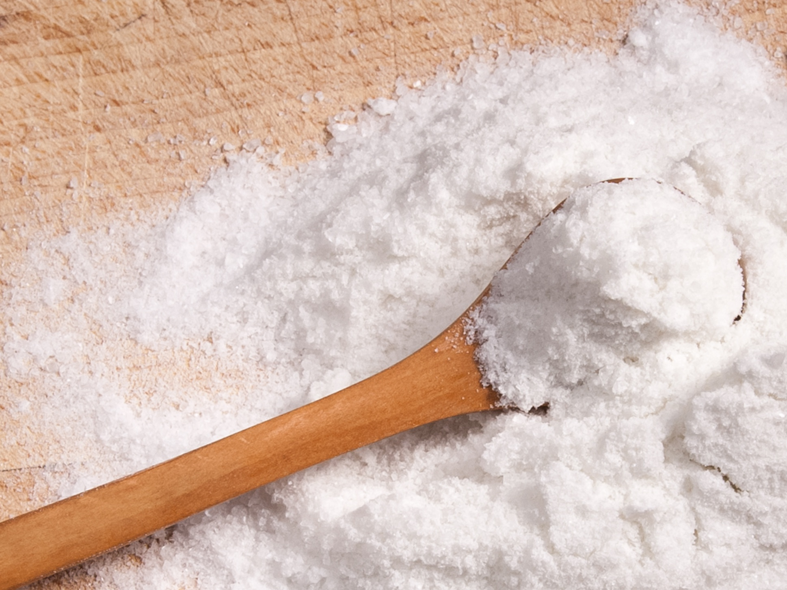

By Lori Rice — FitStar Contributor
Every time my grandmother’s doctor told her she needed to reduce her sodium intake, she would protest that she rarely used the salt shaker. It didn’t take long for my work in public health to prove that she was not the only one to think sodium only comes from table salt. There are many sources of sodium and it’s a rather tricky nutrient. We can’t go without it, but too much may increase our risk for disease.
Defining Salt and Sodium
The table salt we add to recipes or at the dinner table does contain sodium, about 2,325 mg per teaspoon. But if you rarely pick up the shaker, you aren’t safe from overdoing it. Salt contains sodium, but not all sodium is in the form of table salt. Almost all packaged foods contain a form of sodium such as monosodium glutamate (MSG), disodium phosphate, sodium citrate, sodium alginate or sodium hydroxide. If you eat a lot of convenience foods that contain these ingredients, sodium intake can soar to unhealthy levels.

The Pros and Cons of Sodium
As a society we eat a lot of high sodium foods making our average intake in the U.S. over 3,400 mg per day. Research has linked excess sodium intake to an increased risk for high blood pressure, heart disease and stroke. The current health recommendation is that adults should consume no more than 2,300 mg of sodium per day. But the Harvard School of Public Health and other organizations argue for this recommendation to be reduced to no more than 1,500 mg per day. This level of sodium intake is currently recommended for those with existing conditions like high blood pressure, but because so many U.S. adults (almost 70 percent) are at risk for diseases related to sodium intake, these organizations encourage a lower recommendation for the whole population.
With so many forms of sodium in our food, such high intake by most adults and an increased risk for disease, we often overlook that sodium is a necessary mineral. It plays a role in conducting nerve impulses, in muscle contraction and in fluid and mineral balance.
The body needs sodium, but the minimum intake requirements vary by organization. The Centers for Disease Control and Prevention state that we need 180 to 500 mg daily for the body to function properly. It would be difficult to consume all the other necessary nutrients with sodium levels this low, which is why the Institute of Medicine sets the Adequate Intake (AI) at 1,300 to 1,500 mg for most adults. The bottom line is that a diet completely sodium-free is not a healthy goal.
Naturally Reducing Sodium Intake
Cut the processed foods
The American Heart Association has a list they call the “Salty Six.” It is six popular foods that are loaded with excess sodium. Their list includes breads and rolls, cold cuts and cured meats, pizza, poultry products, canned soup and sandwiches or burgers. Do you know what all these foods have in common? They are all pre-made, packaged and processed foods that you would buy at a supermarket or restaurant. Sodium is not only a flavor enhancer it is also a preservative so the more convenience or ready-to-eat foods you consume the more likely it is that your sodium intake will increase, too.
Eating more fresh foods and cooking more of your own foods from minimally processed ingredients is the best way to balance your sodium intake. For example, one serving of canned soup has an average of about 700 mg of sodium. If you make your own soup from fresh vegetables and lean proteins with an unsalted stock, and add about 1 teaspoon of table salt, you can reduce the sodium to fewer than 400 mg per serving. It will also taste much better than low sodium versions of canned soups on the shelf.
Focus on fancy flavor
Salt doesn’t have to be the bad guy. In fact, a little can enhance the flavor of foods, making healthy eating much more enjoyable. Just keep in mind that sea salts and other fancy varieties are not necessarily lower in sodium. The attraction is that they are minimally processed and come from some unique places around the world. Smoked, flavored and infused sea salts also have intense flavors which allow us to use less without sacrificing taste. This is what translates to lower sodium intake. My favorites are bourbon smoked sea salt and Himalayan pink sea salt. A small sprinkle does wonders for fresh sautéed vegetables while keeping sodium intake in check.
FitStar Contributor Profile
{kind=link}
Lori Rice
Lori is a nutritionist and freelance writer, and author of the book The Everything Guide to Food Remedies (Adams Media, 2011). She holds a MS in Nutritional Sciences with a focus in Wellness and Sports Nutrition and a BS in Nutrition, Fitness and Health. Lori shares her recipes, food photos, and travel adventures on her blog, www.fakefoodfree.com.
References:
http://www.ext.colostate.edu/pubs/foodnut/09354.html
http://www.hsph.harvard.edu/nutritionsource/salt-and-sodium/
http://www.permanente.net/homepage/kaiser/pdf/57155.pdf
http://www.clemson.edu/extension/hgic/food/nutrition/nutrition/dietary_guide/hgic4054.html
http://www.hc-sc.gc.ca/fn-an/nutrition/sodium/index-eng.php
http://www.cdc.gov/features/dssodium/
http://www.nal.usda.gov/fnic/DRI/DRI_Water/water_full_report.pdf